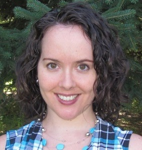

Course Information
Meet the Teacher
Meet the Teacher
|  |
Ms. SpindlerHi, I'm Ms. Spindler. I'll be your teacher for this course. I am excited to introduce you into the world of computer programming. I will spend as much time as necessary to help you do the best you can. But, you must do the work! Contact me any time you need help. |
About me
I grew up in Kanata and graduated from Holy Trinity Catholic High School before studying Software Engineering at the University of Ottawa. Since I took the co-op option, I had the chance to work at high tech companies such as Nortel Networks, Lucent Technologies (later bought by Alcatel, which was bought by Nokia), Bell, and OTI (Object Technology International, later merged with IBM). It was during my time at OTI/IBM that I had the opportunity to do some bug squashing and feature development on the Eclipse IDE, which we will be using in this course!
After graduating with the top mark in Software Engineering, I realized that it was my love of learning and desire to help others learn as well that motivated me to do so well in my studies. I decided to channel that passion into a teaching career instead. When I'm not coding, lesson planning or marking, I enjoy cooking, ballroom dancing, singing, and solving logic problems. Escape rooms are a particular favourite pastime of mine. I live in Kanata with my husband and two children, aged 6 and 10.
Currently
For the past 15 years I have been teaching at Sacred Heart Catholic High School. I have taught in a few different departments, such as Technology, Math, Religious Education, and now Business & Computer Studies. I am excited to be teaching you Computer Programming! I have programmed with a variety of languages, including Visual Basic, Perl, C/C++, Java, Turing, Pascal, and Prolog. This year you will be learning Python!
Contact me
Please contact me
by email at karen.spindler@ocsb.ca
by phone at 613-831-6643